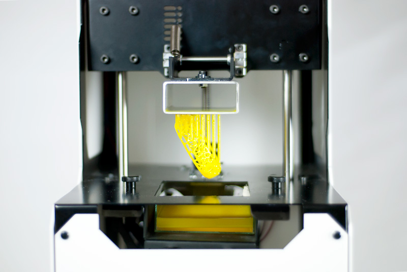

Druckverfahren
Laser Metal Deposition
Das Laser-Metallabscheiden ist ein generatives Fertigungsverfahren für Metalle. International ist es allgemein als "Laser Metal Deposition", abgekürzt LMD, bekannt. Man spricht auch von "Direct Metal Deposition" (DMD) oder "Direct Energy Deposition" (DED). Das Verfahren ist einfach zu erklären. Der Laser erzeugt ein Schweißbad auf der Oberfläche des Bauteils. Das Metallpulver wird automatisch über eine Düse zugeführt. Es werden Raupen geformt, die miteinander verschweißt werden, wodurch Strukturen auf vorhandenen Grundkörpern oder ganzen Bauteilen entstehen. Das Verfahren wird unter anderem in der Luft- und Raumfahrtindustrie, der Energietechnik, der Petrochemie, der Automobilindustrie sowie der Medizintechnik eingesetzt.
Fused Deposition Modeling
Fused Filament Fabrication (FFF), auch bekannt als Fused Deposition Modeling (mit dem markenrechtlich geschützten Akronym FDM), oder auch Filament Freeform Fabrication genannt, ist ein 3D-Druckverfahren, das ein Endlosfilament aus einem thermoplastischen Material verwendet. Das Filament wird von einer großen Spule durch einen beweglichen, beheizten Extruderkopf des Druckers zugeführt und auf das wachsende Werkstück aufgetragen. Der Druckkopf wird computergesteuert bewegt, um die gedruckte Form zu definieren. Normalerweise bewegt sich der Kopf in zwei Dimensionen, um jeweils eine horizontale Ebene oder Schicht aufzutragen; das Werkstück oder der Druckkopf wird dann um einen kleinen Betrag vertikal bewegt, um eine neue Schicht zu beginnen. Die Geschwindigkeit des Extruderkopfes kann auch so gesteuert werden, dass die Abscheidung gestoppt und gestartet wird und eine unterbrochene Ebene entsteht, ohne dass es zwischen den Abschnitten zu Fäden oder Tropfen kommt. Der Begriff "Fused Filament Fabrication" wurde von den Mitgliedern des RepRap-Projekts geprägt, um einen Ausdruck zu schaffen, der rechtlich uneingeschränkt verwendet werden kann, in der irrigen Annahme, dass der Begriff "Fused Deposition Modeling" durch eine Marke geschützt ist.
Stereolithografie
Stereolithografie (abgekürzt SL oder SLA) (zusammengesetzt aus den Worten Stereo, nach dem altgriechisch στερεός stereos, deutsch ‚hart, fest, körperlich‘, auch im Sinne von ‚räumlich‘ und Lithografie, der Drucktechnik nach dem λίθος lithos ‚Stein‘ und γράφειν graphein ‚schreiben‘) ist das älteste patentierte additive Fertigungsverfahren, bei dem ein Werkstück durch frei im Raum materialisierende (Raster-)Punkte schichtenweise aufgebaut wird. Die Fertigung eines Teils oder mehrerer Teile gleichzeitig erfolgt üblicherweise vollautomatisch aus am Computer erstellten CAD-Daten. Die Anmeldung des Patents erfolgte 1984 durch den US-Physiker Chuck Hull. Ein lichtaushärtender Kunststoff (Photopolymer), zum Beispiel Acryl-, Epoxid- oder Vinylesterharz, wird von einem Laser in dünnen Schichten (Standardschichtstärke im Bereich 0,05–0,25 mm, bei Mikrostereolithografie auch bis zu 1-Mikrometerschichten) ausgehärtet. Die Prozedur geschieht in einem Bad, das mit den Basismonomeren des lichtempfindlichen (photosensitiven) Kunststoffes gefüllt ist. Nach jedem Schritt wird das Werkstück einige Millimeter in die Flüssigkeit abgesenkt und auf eine Position zurückgefahren, die um den Betrag einer Schichtstärke unter der vorherigen liegt. Der flüssige Kunststoff über dem Teil wird dann durch einen Wischer, bzw. Rakel, gleichmäßig verteilt. Dann fährt ein Laser, der von einem Computer über bewegliche Spiegel gesteuert wird, auf der neuen Schicht über die Flächen, die ausgehärtet werden sollen. Nach dem Aushärten erfolgt der nächste Schritt, sodass nach und nach ein dreidimensionales Modell entsteht.